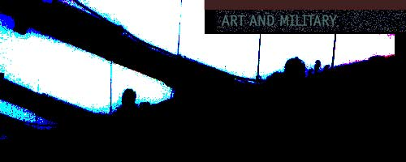
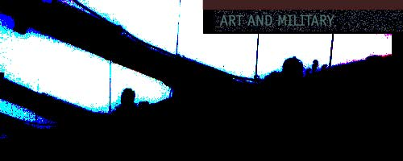

A visit to this site implicates the user in unauthorized attempts to upload information to U.S. government web servers. This is strictly prohibited and may be punishable under the Public Law 99-474 (The Computer Fraud and Abuse Act of 1986).
This issue of switch hosts a Stillman Project. Everyone navigating Switch - the screeners - will leave a trace of color on all links he/she follows. The color is selected based on the top level domain suffix of the client computer.* This allows the screener to select a link based on its color, i.e. on the domain suffix of previous screeners who have chosen that link. Another feature of this Stillman Project - a method referred to as slipping or shadowing, gives the screener the option of choosing, at the bottom of each page, to follow (shadow) one of the three most saturated links (the most red, green, or blue link on each page).
*Screeners from network domains not geographicaly located within the territory of the United States of America are upon entry of the site asked to submit a relevant domain suffix.

 
